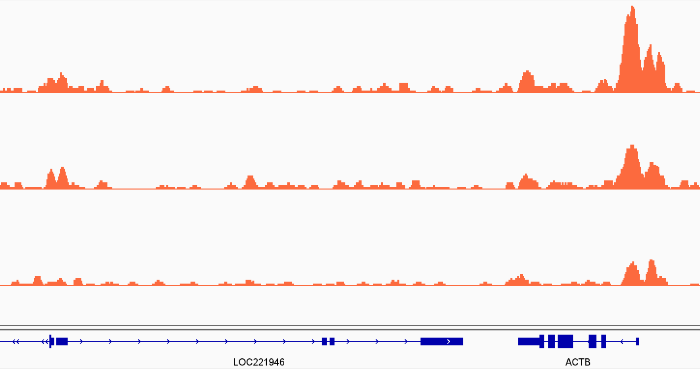

3 Peak Calling
- Apply the
nf-core/chipseqpipeline for pre-processing, mapping, peak calling and QC of ChIP-seq data. - Evaluate the quality of the ChIP from the MultiQC report.
3.1 Peak Calling Workflow
One of the main steps in analysing ChIP-seq data is to identify regions of the genome enriched for sequencing reads, usually referred to as peak calling. These peaks are indicative of regions of the genome where our protein of interest binds to the DNA.
There are several steps involved before we do the actual peak calling, namely filtering the sequencing reads for quality and aligning them to the reference genome. Because many of these steps are relatively standard, the bioinformatic community has built pipelines that can be used to automate these data processing steps in a scalable manner.
We will use the Nextflow pipeline developed by the nf-core project, which we will refer as nf-core/chipseq. These pipelines are very well documented, with many options available to customise our analysis. The main advantage of these workflows is that they chain together dozens of tools, can process an arbitrary number of samples and can be run both locally and on HPC clusters.
As part of their output they also provide an interactive quality control report (HTML file), which is very useful to identify any issues with our samples early on.
3.2 Running nf-core/chipseq
A typical command to run this workflow is given here:
nextflow run nf-core/chipseq \
-profile singularity \
--input samplesheet.csv \
--outdir path/to/results \
--fasta path/to/genome.fasta.gz \
--gff path/to/annotation.gff.gz \
--blacklist path/to/exclusion_lists.bed.gz \
--macs_gsize 2700000000 \
--min_reps_consensus 2Where:
-profile singularityis the mode we want to use for software management. Singularity is recommended when running analysis on HPC clusters. Other alternatives includecondaanddocker.--inputis a CSV file containing information about our samples names and the directory paths to their respective FASTQ files. The format of this file is fully detailed in the documentation.--outdiris the output directory where we want our results to be saved. This directory will be created if it does not already exist.--fastaand--gffare the directory paths to the reference genome and gene annotation, respectively. These can be typically be downloaded from public repositories such as ENSEMBL.--blacklistis the directory path to a BED file containing regions of the genome to exclude from the analysis (regions identified as problematic for peak calling).--macs_gsizeis the estimated mappable genome size to be used as input to the MACS software. The MACS documentation recommends using 2.7e9 for the human genome and 1.87e9 for mouse.--min_reps_consensusis the minimum number of replicates where a peak should be observed to be included in a “consensus” peak set.
When you start running the pipeline, you will get a progress log printed on the terminal and a message will be printed when it completes.
By default the pipeline runs MACS in broad peak mode. If you want to run it in narrow peak mode (e.g. if you’re studying transcription factors or narrow histone marks) you have to add the option --narrow_peak to your command.
3.3 Pipeline outputs
The nf-core/chipseq workflow generates many output files, which are explained in detail in the workflow documentation. We highlight some of the more relevant files we will use throughout our analysis:
- MultiQC report: this is the quality control report, which is usually the first thing to look at once we run our pipeline. This is located in
multiqc/<PEAK TYPE>/multiqc_report.html. - Coverage tracks: these files are in “bigwig” format, a compact representation of the genome coverage of each sample and can be used in genome browsers such as IGV (more on this below). You can find these files in
bwa/mergedLibrary/bigwig/*.bigWig, with one file per sample. The coverage values in these files are normalised to 1M mapped reads. - Called peaks: files containing the peak intervals identified by the MACS software. These files are in standard BED format (more details in the MACS documentation page). These files are located in
bwa/mergedLibrary/macs2/<PEAK_TYPE>/*.broadPeak. - Consensus peaks: these are the BED files containing the consensus peak intervals identified in a minimum number of replicates set by the pipeline option mentioned above. A consensus file is generated per antibody and these can also be loaded into IGV. These files are located in
bwa/mergedLibrary/macs2/<PEAK_TYPE>/consensus/<ANTIBODY>/*.bed.
There are many more output files, which can be useful depending on the analysis you want to do. But these are the main ones we will focus on for now.
3.4 Quality report
The MultiQC report generated by nf-core/chipseq contains a range of visualisations and metrics that can be used to assess the quality of our samples, from the sequencing reads, to the mapping all the way down to the peak calling.
3.4.1 Read quality
The first few sections of the report show:
- The results of the FastQC software (both before and after quality filtering), reporting average read quality, adapter contamination, GC content of our reads, amongst others. See the FastQC documentation for full details.
- A summary of the results from running the
cutadaptsoftware, which is used for quality-filtering of our reads and trimming adapter contaminations.
Nowadays sequences tend to be very high quality, so it is unusual to have serious problems at this stage. However, if a very high fraction of your reads was filtered out, you should revisit what may have happened during library preparation and sequencing.
3.4.2 Mapping quality
In terms of mapping quality, we want to look out for:
- What fraction of reads mapped to the genome?
- How many reads are mapped to the genome after de-duplication? ENCODE’s guidelines suggest having 10-20M reads for narrow peaks and 40-50M reads for broader peaks.
- What is the % of duplicated reads?
- What was our library complexity (complexity curve)?
3.4.3 ChIP Enrichment
This part of the QC report is more specific for ChIP-seq analysis. There are several quality metrics that can be used to assess the quality of the ChIP enrichment:
- Strand-shift correlation and the derived metrics NSC and RSC
- FRiP score
- Fingerprint plot
- Correlation between replicates and PCA - in the pipeline this is done with DESeq2 (but
deeptoolscan do this also)
3.5 Visualising peaks in IGV
After thoroughly analysing our MultiQC report, it is also advisable to visually inspect the coverage tracks for our samples (including input controls). This can give us a good indication of whether our peaks are sharp or broad (or somewhat in-between), whether they tend to occur over gene bodies, promoters, or spread across the genome.
Although we can obtain this information from our MultiQC report, it is still advisable to perform this visual inspection of the data. For example, you can look at genes/regions where you expect binding to occur for your protein of interest, or where you expect differences due to the treatment/conditions you used (e.g. from previous experiments, literature, qPCR, …).

3.6 Exercises
nf-core/chipseq
In the course data, you will find a shell script named scripts/01-chipseq_workflow.sh. This contains some code to run the Nextflow pipeline on our samples. However, there’s a few things that need fixing first:
- Fix the
samplesheet.csvfile where the word “FIXME” appears. You can open this file in a spreadsheet program to fix the issue. - Open the script
scripts/01-chipseq_workflow.shusing a text editor (you can usenanofrom the command line, or double-click the file to open it with a graphical text editor). Fix the code where the word “FIXME” appears. Output the results to a directory calledresults/nf-chipseq. - Run the script to execute the workflow. Hint: to run a shell script you use the program
bash name_of_script.sh- Check that the workflow starts running successfully. You should get some progress of the different steps printed on the terminal.
- The workflow will take some time to run (~15 minutes). You don’t need to wait for it to finish before moving on to the next exercise.